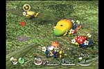

■
ジャンル：AIアクション
■
発売予定日：2001年10月26日
■
希望小売価格：6,800円
■
プレイ人数：1人専用
■
対応周辺機器及び付加機能：振動対応
地面にぴょこっと生えていて、ひき抜けばあなたのあとをチョコチョコとついてくる、半分植物半分動物のフシギな生物「ピクミン」。１匹１匹は弱いけど、たくさん集まればその力はバツグン。道をふさぐ壁を壊したり、カラダの何倍もでっかいモノを運んだり、巨大な生物と戦うことだってできる。大勢のピクミンを操って、大きな目標をなしとげる。そんな、自分のためにケナゲに働いてくれるピクミンは、もうとってもいとおしい。
ピクミンは赤、青、黄色の３種類。それぞれ能力が違って、さらには成長だってする。適材適所、タイプごとにうまく操ることが重要。
▼
空から、地面から、自然界の巨大生物があなたたちに襲いかかる。うまくピクミンたちに指示しないと、片っ端から食べられてしまう……。
『ピクミン』のストーリーは、主人公が宇宙旅行中に流星にぶつかり、未知の惑星に墜落してしまうところからはじまる。この星から脱出するためには、バラバラになった宇宙船の部品を探しださなくてはならない。でもまわりは大自然……。そんなときに出会ったのが奇妙な生物「ピクミン」。すなおで勇気あふれる彼らとともに、すべての宇宙船の部品を見つけることができるだろうか。すべては「ピクミン」とあなたのコンビネーションにかかっている。

この『ピクミン』の監督はご存知、宮本茂。ゲーム中の背景は、彼の自宅近所の自然の景色を元に作られている。この身近な自然の風景とゲームの混ざり具合が、まるですぐそばに「ピクミン」が潜んでいるような、そんな親しみやすさを生んでいるのだ。
2001 Nintendo
サイズ：1381KB／時間：37秒（QuickTime Movie）